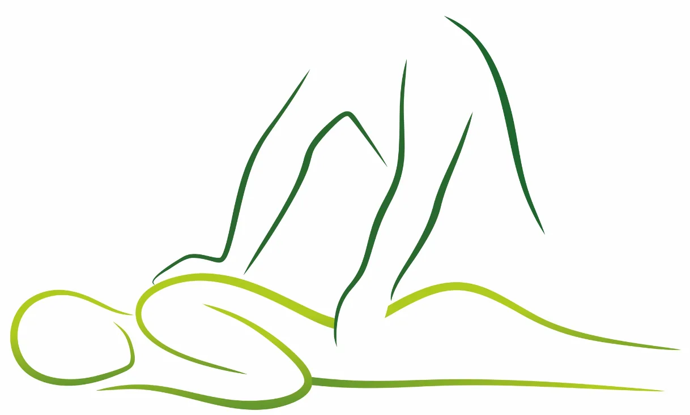
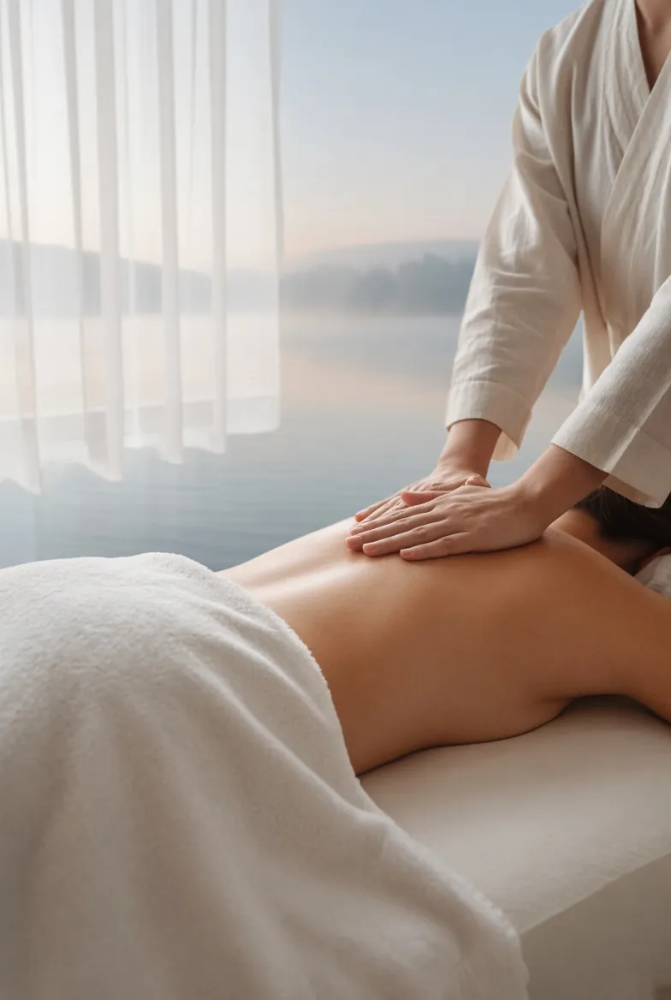
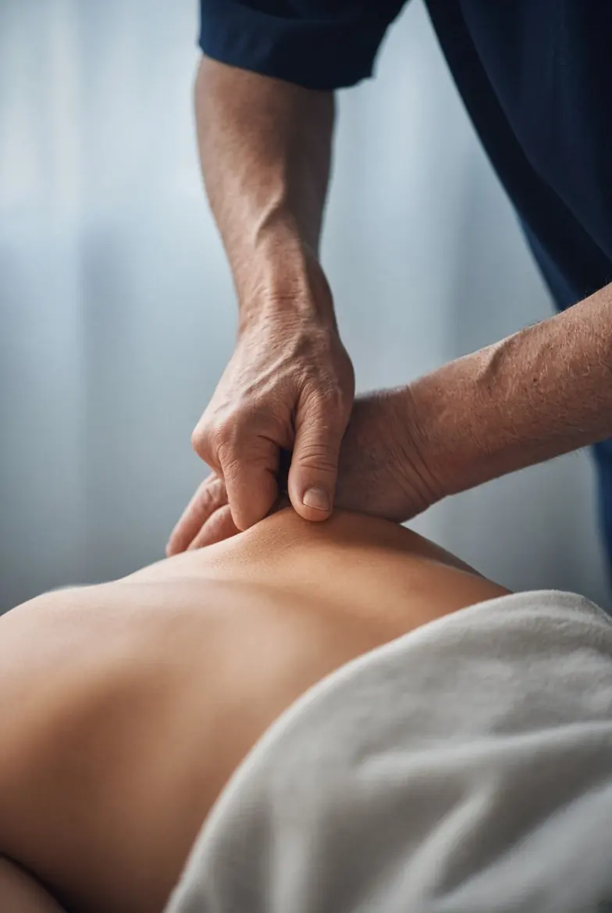
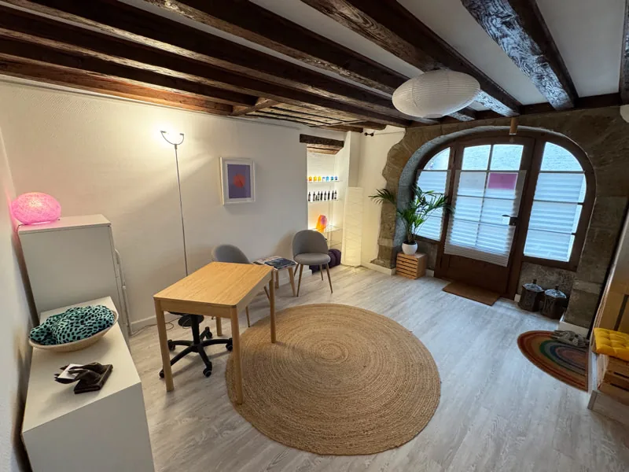
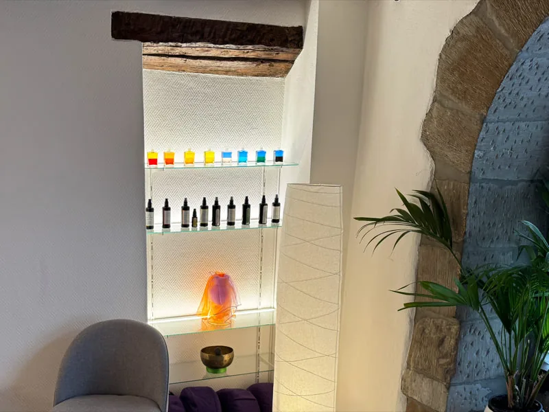
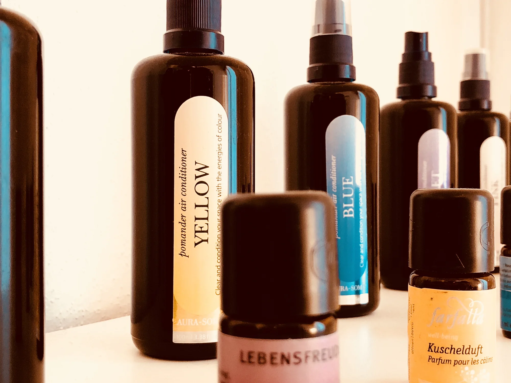

Le jeudi
Nyon
Ruelle de la Poterne 131260 Nyon
60 min CHF 100.– · 40 min CHF 70.– · sur rendez-vous au 079 381 24 67

Beat HächlerMassages · Nyon & Genève Rendez-vousMassages à Nyon et à Genève
Je m'occupe du reste. Massage relaxant, massage anti-tensions et drainage lymphatique, par Beat Hächler.
Bonjour et bienvenue
Je vous propose des massages personnalisés, que ce soit pour lâcher prise, soulager les tensions musculaires ou soutenir votre bien-être global. Chaque massage s'adapte à vos besoins.
Enseignant de formation, j'ai fait du toucher mon métier à 50 ans. Je masse le jeudi à Nyon, dans la vieille ville, et le mercredi et le vendredi à Genève, aux Bains des Pâquis.
Beat Hächler
Les massages

Des mouvements lents et enveloppants pour relâcher le stress du quotidien et retrouver la sensation d'habiter son corps.
Découvrir
Un travail ciblé sur les zones contractées et les points gâchettes, avec pression ischémique et Tecarthérapie si besoin.
Découvrir LégèretéUn massage doux et rythmé qui procure une sensation de légèreté, souvent apprécié quand les jambes sont lourdes.
DécouvrirVous hésitez entre deux massages ?
Montrez-moi où se logent vos tensions : le guide vous oriente en un geste.
Trouver mon massage
Touchez une zone de la silhouette, ou choisissez dans la liste : je vous indique le massage qui lui convient.
Nuque et épaules
Je vous conseille : Massage anti-tensions
Nuque, épaules et trapèzes comptent parmi les zones de tension les plus fréquentes. Le massage cible les nœuds musculaires avec des pressions soutenues.
Ce guide oriente, il ne pose pas de diagnostic. En cas de douleur persistante ou inhabituelle, consultez un médecin.
Tarifs à Nyon

Pas de remboursement par les assurances complémentaires.
Aux Bains des Pâquis, à Genève : 50 minutes, CHF 80.–, au tarif de l'association Mains des Bains.
Le cabinet
Le cabinet de Nyon se trouve Ruelle de la Poterne 13 : poutres anciennes, voûte en pierre et lumière douce. C'est là que je masse le jeudi et que se déroulent les cours de massage.
Description à valider par Beat





Deux lieux, trois jours
Carte simplifiée, sans échelle.
Le jeudi
60 min CHF 100.– · 40 min CHF 70.– · sur rendez-vous au 079 381 24 67
Le mercredi et le vendredi
Avec l'association Mains des Bains · 50 min CHF 80.– · réservation en ligne
Respirer une minute
Une minute, six respirations lentes.